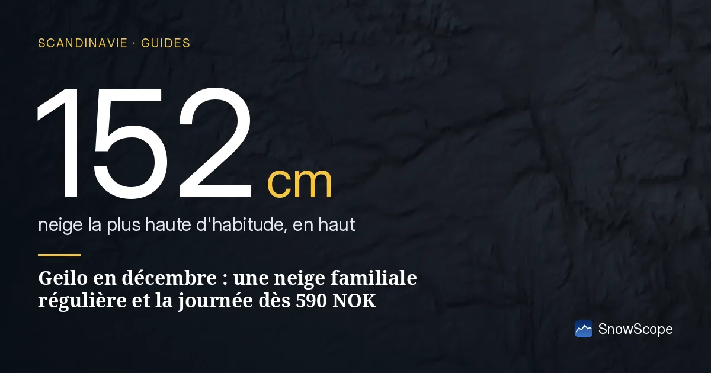
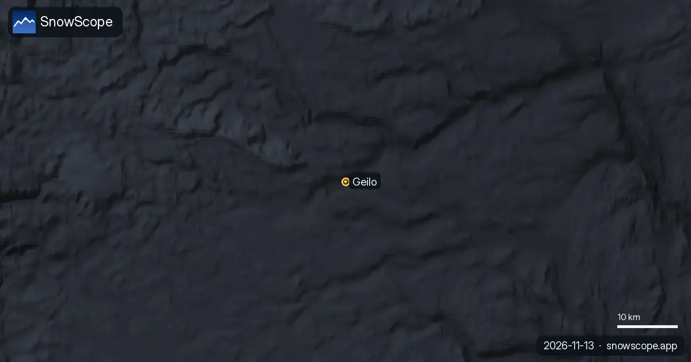

Geilo en décembre : une neige familiale régulière et la journée dès 590 NOK
Vous envisagez une semaine de décembre dans une station familiale norvégienne ? Geilo offre des pentes douces et un manteau de neige fiable sur les trois niveaux d'altitude. Sur 46 hivers d'historique, son secteur médian (971 m) a eu 30 cm ou plus lors de la semaine du 15-21 décembre dans 96 % des cas, et même les années déficitaires conservent 35 cm là-bas le 15 décembre.
Consultez les prévisions neige en temps réel pour Geilo sur l'application SnowScopeHauteurs de neige, alertes poudreuse et carte 3D, gratuitement.
Ce que vous trouverez sur les pistes
Geilo s'étend sur un haut plateau entre 779 m et 1 163 m avec 35 km de pistes balisées et 20 remontées. Le terrain est doux, ce qui compte pour les débutants et les familles : une première semaine se passe mieux quand on n'affronte pas de descentes raides et quand la neige est fiable.
Un 15 décembre type, la base offre 42 cm, le milieu 57 cm et le sommet 68 cm. C'est suffisant pour skier partout sur la carte. La base a eu 30 cm dans 80 % de nos 46 hivers lors de la semaine du 15-21 décembre et n'a jamais été à nu le 15 décembre sur toute cette période.


Quand la neige de décembre est la plus assurée
Les deux premières semaines de décembre sont le pari le plus sûr. À partir du 8 décembre, le sommet a eu 30 cm dans 98 % des hivers chaque semaine jusqu'à la fin du mois. La semaine de Noël est particulièrement fiable : 85 % des hivers ont eu 30 cm en bas et 98 % au milieu et en haut. Dans 26 % des hivers, la base a atteint 60 cm ou plus lors de la semaine de Noël.
Le stock de neige se constitue tôt ici en raison du paysage haut et froid. Le jour habituel du premier 30 cm au sol au milieu est le 14 novembre. Même une mauvaise année à neige (1 sur 10) conserve 35 cm au milieu le 15 décembre, vous ne risquez donc guère de trouver le sol nu.
Comment cet hiver se compare avec le passé
La tendance à long terme montre que la neige de décembre à Geilo s'est amincie avec le temps, bien qu'elle reste skiable. La moyenne de décembre en bas a baissé de 51 cm lors des 15 premiers hivers à 32 cm lors des 15 derniers hivers. Au milieu, la baisse a été de 64 cm à 52 cm. L'hiver dernier (2025-26) a apporté 28 cm en bas le 15 décembre et 37 cm au milieu — en dessous des valeurs habituelles anciennes mais suffisant pour fonctionner.
Ce qui n'a pas changé, c'est la fiabilité d'un hiver à l'autre. Chaque semaine de Noël des 15 derniers hivers a encore eu 30 cm au milieu, donc le manteau de neige reste une constante en décembre même si les épaisseurs moyennes ont diminué.
Forfaits de remontée et réservation
Le site officiel de Geilo annonce des forfaits journée adulte à partir de 590 NOK, environ 56 EUR au taux de change du 12 novembre. Les forfaits multi-jours commencent à partir de 1 138 NOK pour 2 à 14 jours. Ce sont des prix de base ; votre coût réel dépend des dates exactes que vous choisissez, car la station utilise une tarification dynamique. Vérifiez la boutique en ligne pour votre semaine exacte avant de réserver.
Geilo se situe sur la ligne ferroviaire Oslo-Bergen, ce qui est un avantage pratique : un trajet en train réduit le coût et le stress de la conduite sur des routes d'hiver. Apportez des vêtements chauds ; le plateau est exposé et les jours de décembre sont courts, vous passerez donc l'essentiel des heures de jour sur la neige.
Comment Geilo se compare à Hafjell
Hafjell, l'ancienne zone olympique près de Lillehammer, offre beaucoup plus de dénivelé (866 m au lieu de 384 m) mais commence à seulement 192 m, bien en dessous de la base de Geilo à 779 m. Un 15 décembre type, la base de Hafjell a 40 cm et son milieu 52 cm — tous deux plus minces que ceux de Geilo. Lors de la semaine du 15-21 décembre, 76 % des hivers avaient 30 cm à la base de Hafjell, comparé à 80 % à celle de Geilo.
Pour les familles en quête d'une neige de décembre fiable sur des pentes faciles, Geilo est le choix plus sûr et plus simple. Vous ne trouverez pas les descentes raides ou les sensations de grand dénivelé de Hafjell, mais vous trouverez un manteau régulier de la base au sommet.
Conseils aux skieurs
- Réservez une semaine à partir du 8 décembre : le sommet a eu 30 cm dans 98 % des hivers à partir de cette date jusqu'à la fin du mois.
- La base atteint 30 cm le 15 décembre dans 85 % des hivers, donc les visites en début de décembre comportent légèrement plus de risque que celles de fin décembre.
- Vérifiez vos dates exactes sur la boutique en ligne de la station avant de budgéter : 590 NOK est un prix « à partir de » et les forfaits journée réels peuvent varier.
- Prenez le train depuis Oslo si possible : les routes de montagne d'hiver sont exigeantes et le chemin de fer économise du temps et de l'argent.
- Attendez-vous à des jours courts et un froid intense sur le plateau exposé ; habillez-vous en couches et commencez tôt pour profiter au maximum de la lumière.
À propos de ces chiffres
Les hauteurs de neige des stations sont la neige la plus épaisse sur le haut du domaine à la date indiquée ; ce sont des estimations pour une zone, pas une mesure en un point. Les prévisions peuvent changer. Consultez toujours le bulletin d'avalanche officiel avant le hors-piste.
Bulletins d'avalanche officiels: Varsom (NVE)
Citer ce bulletin
Pour la recherche, l'enseignement ou la presse : chiffres et graphiques réutilisables librement sous CC BY 4.0 avec cette citation.
SnowScope (2026), Geilo en décembre : une neige familiale régulière et la journée dès 590 NOK, https://snowscope.app/blog/fr/2026/11/geilo-december-ski-trip-family-cheap-snow.html, consulté le 2026-11-14
SnowScope (Atlas Labs). (2026, November 14). Geilo en décembre : une neige familiale régulière et la journée dès 590 NOK. SnowScope snow reports. https://snowscope.app/blog/fr/2026/11/geilo-december-ski-trip-family-cheap-snow.html
BibTeX
@misc{snowscope2026geilodecemberskitripfami,
author = {{SnowScope (Atlas Labs)}},
title = {Geilo en décembre : une neige familiale régulière et la journée dès 590 NOK},
year = {2026},
month = nov,
howpublished = {\url{https://snowscope.app/blog/fr/2026/11/geilo-december-ski-trip-family-cheap-snow.html}},
note = {Published 2026-11-14 13:29 UTC; accessed 2026-11-14}
}· CC BY 4.0 · Méthodes, données et outils →
Geilo : neige et température selon l'altitude, cet hiver vs l'hiver dernier (outils) →
Suivre Geilo
Gratuit : un message quand la neige arrive, et la météo chaque matin.